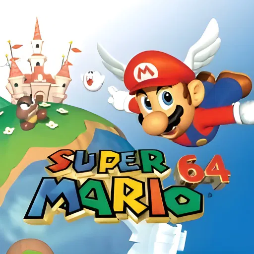
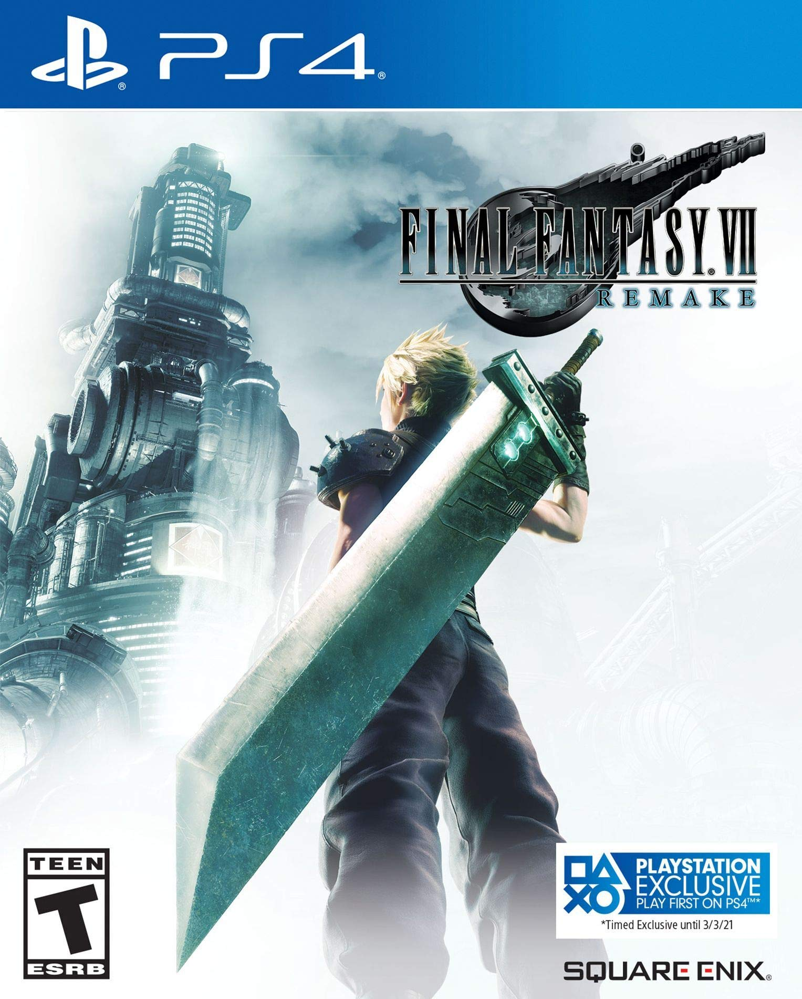
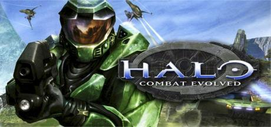
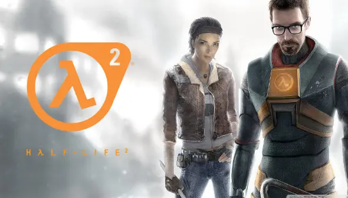

Los 10 Mejores Videojuegos de Todos los Tiempos
-
The Legend of Zelda: Ocarina of Time

Lanzado en 1998 para la Nintendo 64, "Ocarina of Time" revolucionó los juegos de aventura con su mundo abierto y su innovador sistema de combate en 3D. Su narrativa envolvente y el diseño de mazmorras lo convirtieron en un referente dentro de la industria. Hoy en día sigue siendo considerado un ejemplo perfecto de cómo un videojuego puede contar una historia épica y ofrecer una experiencia de juego inolvidable.
-
The Witcher 3: Wild Hunt

"The Witcher 3", lanzado en 2015, es aclamado por su vasta narrativa, sus personajes complejos y su mundo abierto extremadamente detallado. Geralt de Rivia, el protagonista, viaja por un universo lleno de decisiones morales que impactan directamente la historia. Los gráficos espectaculares, la profundidad del juego y la libertad de exploración lo convierten en uno de los RPG más inmersivos jamás creados.
-
Super Mario 64
Super Mario 64, lanzado en 1996, fue pionero en los juegos de plataformas en 3D. Su innovador diseño de niveles, el control preciso del personaje y el uso creativo de la cámara establecieron un nuevo estándar para los juegos en 3D. Sigue siendo uno de los títulos más influyentes de la historia, demostrando que los gráficos tridimensionales podían ser tanto accesibles como profundamente divertidos.
-
Red Dead Redemption 2

Lanzado en 2018, "Red Dead Redemption 2" es una obra maestra narrativa ambientada en el salvaje oeste. Con su mundo abierto masivo y atención al detalle, el juego ofrece una experiencia profundamente inmersiva, abordando temas de lealtad, moralidad y supervivencia. Sus paisajes detallados, la historia emocionalmente compleja y los personajes memorables lo convierten en uno de los mejores juegos de la última década.
-
Final Fantasy VII
Lanzado en 1997, "Final Fantasy VII" es un icono de los juegos de rol y uno de los títulos más influyentes de la franquicia Final Fantasy. Con su historia épica, personajes inolvidables como Cloud y Sephiroth, y su revolucionario sistema de combate por turnos, este juego redefinió el género de los RPG y dejó una marca imborrable en millones de jugadores en todo el mundo.
-
Dark Souls

Lanzado en 2011, "Dark Souls" se destacó por su dificultad desafiante y su narrativa críptica, creando un subgénero conocido como "souls-like". Su diseño de niveles interconectados, el combate estratégico y el sistema de progresión en base a la perseverancia hicieron de este juego una experiencia única para los jugadores, influyendo profundamente en el diseño de videojuegos modernos.
-
Halo: Combat Evolved
Lanzado en 2001, "Halo: Combat Evolved" redefinió los juegos de disparos en primera persona en consolas. Su historia épica, multijugador local y online, junto con su revolucionario diseño de control para consola, lo convirtieron en un clásico instantáneo. También fue clave en el éxito inicial de la Xbox y en el desarrollo del género FPS en el mundo de los videojuegos.
-
Half-Life 2
Lanzado en 2004, "Half-Life 2" es aclamado por su revolucionaria física en el juego, su narrativa envolvente y su atmósfera única. Fue pionero en la implementación de la interacción física en los videojuegos, permitiendo a los jugadores resolver acertijos de formas innovadoras. Su motor gráfico Source fue un avance tecnológico que influyó en el desarrollo de futuros títulos.
-
The Last of Us

Lanzado en 2013, "The Last of Us" combina una narrativa emocionalmente impactante con una jugabilidad tensa y estratégica. La historia de Joel y Ellie en un mundo post-apocalíptico atrapó a jugadores de todo el mundo, explorando temas de amor, pérdida y sacrificio. Su calidad cinematográfica y su atención a los detalles lo han establecido como uno de los mejores juegos narrativos de todos los tiempos.
-
Grand Theft Auto V

Desde su lanzamiento en 2013, "Grand Theft Auto V" ha sido uno de los juegos más exitosos y completos de la historia. Ofrece un vasto mundo abierto donde los jugadores pueden realizar misiones, explorar la ciudad de Los Santos o simplemente causar caos. Su narrativa satírica y su enfoque en la libertad del jugador lo convierten en una obra maestra del diseño de sandbox.